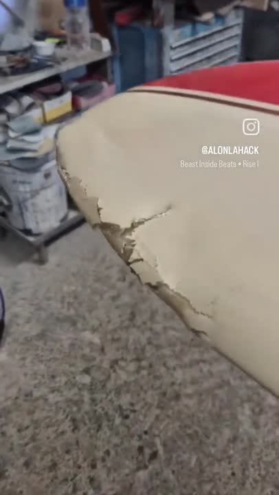
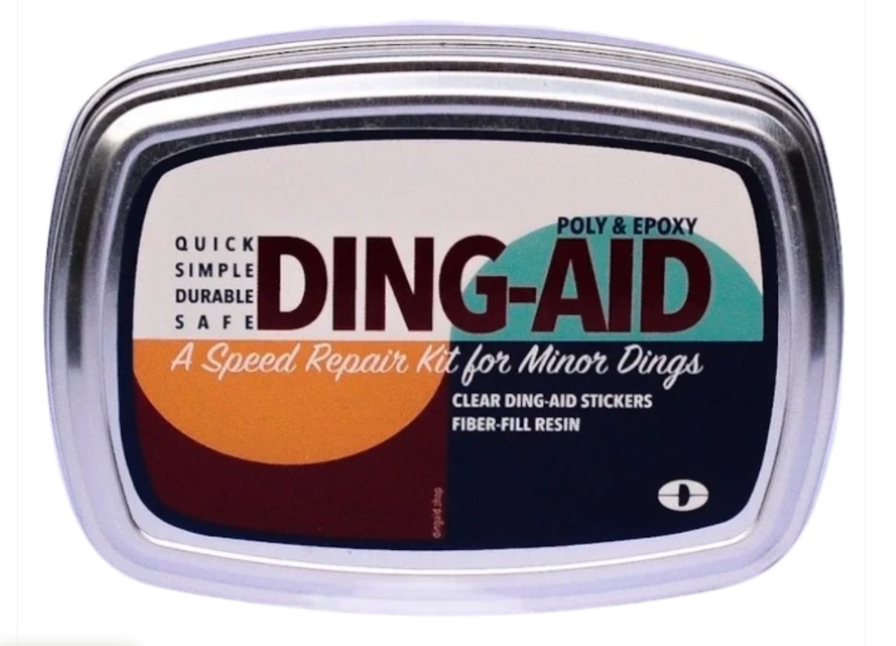

דינגים ופיצוצים
ניקוי, ייבוש, מילוי קצף וגלאס. הגלשן חוזר אטום וחזק מקודם באזור התיקון.
הכי נפוץCONFIG.phone בקובץ (בפורמט 9725XXXXXXXX) כדי להפעיל את כל הכפתורים.למעלה מ-20 שנות ניסיון · כפר ויתקין
דינגים, ריילים, בתי חרב, שברים מלאים והצהבה. שלחו 3–5 תמונות של הנזק ב-WhatsApp — ותקבלו הערכת מחיר וזמן עבודה.

מה נכנס לסדנה
מפיצוץ קטן שספג מים ועד גלשן שנשבר לשניים. השאלה היא כמה עבודה, אילו חומרים, וכמה זמן הוא צריך להישאר אצלי.
ניקוי, ייבוש, מילוי קצף וגלאס. הגלשן חוזר אטום וחזק מקודם באזור התיקון.
הכי נפוץתיקון מדויק לשני הצדדים כדי לא לייצר חוסר איזון בין רייל לרייל.
עבודה עדינההחלפת פלאג שנתלש, חיזוק בקרבון והתאמה למערכת הקיימת בגלשן.
חלקיםחיבור, חיזוק לרוחב, שחזור שייפ וליטוש. כן, גם אם הוא נשבר לשניים.
שבר מלאצבע מתחת לגלאס, התאמה לגוון המקורי, פוליש. שיהיה חלק ושלא ייראה תיקון.
גימוראותה עבודה גם על גלשני סאפ, קייטסרף וגלשני רוח.
לא רק גליםמהסדנה
קטעים קצרים מהעבודה השוטפת — לפני הפוליש, בלי פילטרים.
חדש מהסדנה
ערכת תיקון מהיר בפח קטן שנכנס לתיק — כדי שדינג קטן לא יעצור לכם את העונה.

לדינגים קטנים, סדקים וחריצים בגלאס. מתקנים בבית, מחכים שיתייבש — וחוזרים למים.
מתאימה גם לפוליאסטר וגם לאפוקסי — לפי האריזה (POLY & EPOXY). לא בטוחים שהנזק מתאים? שלחו לי תמונה.
מה בערכהעובדים עם כפפות, באוויר פתוח ורחוק מילדים. שרפים ומקשים מסוכנים למגע ולנשימה.
מתאים לערכה
שווה להביא לסדנה
מהתמונה ועד המים
3–5 תמונות של הנזק, ואני חוזר עם הערכת מחיר וזמן עבודה. בלי תמונות אי אפשר לתמחר — כל דינג נראה אחרת מבפנים.
ההגעה בתיאום מראש. אם אני לא בסדנה — משאירים את הגלשן בכניסה לבית, ואני שולח סרטון קצר שמראה בדיוק איפה.
אני מעדכן ב-WhatsApp כשהגלשן מוכן לאיסוף, כולל תמונה של התיקון הגמור. מהרגע הזה מתחילה תקופת האיסוף — מי שיודע שלא יוכל להגיע בזמן, שיכתוב לי מראש ונסכם על אחסון.
כפר ויתקין · הגעה בתיאום מראש
לא הצלחנו לטעון את המפה. השתמשו בכפתורי הניווט שליד הכתובת.
הכתובת
כביש עוקף דרום
כפר ויתקין
הפין המדויק נפתח בכפתורי הניווט
הגעה בתיאום מראש בלבד. אם אלון לא בסדנה — משאירים את הגלשן בכניסה, בדיוק במקום שמופיע בסרטון שהוא שולח ב-WhatsApp.
יש לי סרטון קצר שמראה איך מגיעים לסדנה ואיפה בדיוק להשאיר את הגלשן בכניסה לבית. אשלח לכם אותו ב-WhatsApp.
שלחו לי את הסרטוןלפני שאתם כותבים
לא מצאתם תשובה? הבוט בפינה עונה על הבסיס, ואלון — ב-WhatsApp.
אין מחירון אחיד, כי המחיר נגזר מכמות העבודה והחומרים: תיקון רייל, למשל, חייב להיות מדויק בשני הצדדים, והחלפת בית חרב מוסיפה חלק מעבר לעבודה. לכן אני מתמחר רק אחרי שאני רואה 3–5 תמונות של הנזק. שלחו ב-WhatsApp ואחזור עם מספר.
תלוי בסוג התיקון ובעומס בסדנה, ולא פחות חשוב — בייבוש. גלשן שספג מים חייב להתייבש לגמרי לפני שסוגרים אותו, אחרת התיקון לא יחזיק. אחרי שאראה תמונות אתן לכם הערכה מדויקת יותר, ואם יש דדליין אמיתי (טיסה, תחרות) כתבו לי ונראה מה אפשר.
מוציאים אותו מהשמש ומהנרתיק, שמים אותו בצל עם הצד השבור כלפי מטה כדי שהמים יֵצאו, ולא גולשים איתו יותר. כל גלישה נוספת דוחפת עוד מים פנימה ומגדילה את התיקון. אל תסתמו את החור בסקוץ׳ ותמשיכו לגלוש — זה בדיוק מה שהופך תיקון קטן לתיקון גדול.
DING-AID מיועדת לדינגים קטנים, ולפי האריזה מתאימה גם לגלשני פוליאסטר וגם לאפוקסי. קצף שספג מים, רייל מעוך, בית חרב שנתלש או שבר — את אלה עדיף להביא לסדנה. לא בטוחים? שלחו לי תמונה לפני שמזמינים.
הסדנה קטנה, וגלשן מוכן שממתין תופס את המקום של גלשן שצריך תיקון. לכן יש תקופת איסוף מהרגע שאני מודיע שהגלשן מוכן, ומעבר לה נגבים דמי אחסון. אם אתם כבר יודעים מראש שלא תוכלו להגיע — טיסה, חו״ל, תקופה עמוסה — כתבו לי לפני התיקון או תוך כדי, ונסגור את זה מראש בלי הפתעות.
אני לא מטפל בביטוחים, אבל אני כן מספק תמונות ותיאור מפורט של הנזק והתיקון אם חברת התעופה או הביטוח מבקשים מסמך. תגידו לי מראש שאתם צריכים את זה.
ברוב המקרים כן. אני צובע מתחת לגלאס ומתאים גוונים, כולל שחזור לוגו כשצריך, ומסיים בפוליש. יש גוונים ואפקטים שקשה לשחזר במאה אחוז — נדבר על זה כשאראה את הגלשן.
כן. אותם חומרים, אותה עבודה. בסאפ במיוחד חשוב לטפל מהר בפיצוצים, כי הוא סופג הרבה מים.
עדיף שלא. הסדנה עובדת בתיאום מראש, ואני לא תמיד שם. שלחו הודעה לפני שאתם יוצאים — ואם אני לא בסדנה, אשלח סרטון שמראה איפה להשאיר את הגלשן.
הים לא מחכה
3–5 תמונות ב-WhatsApp, והערכת מחיר חוזרת אליכם.